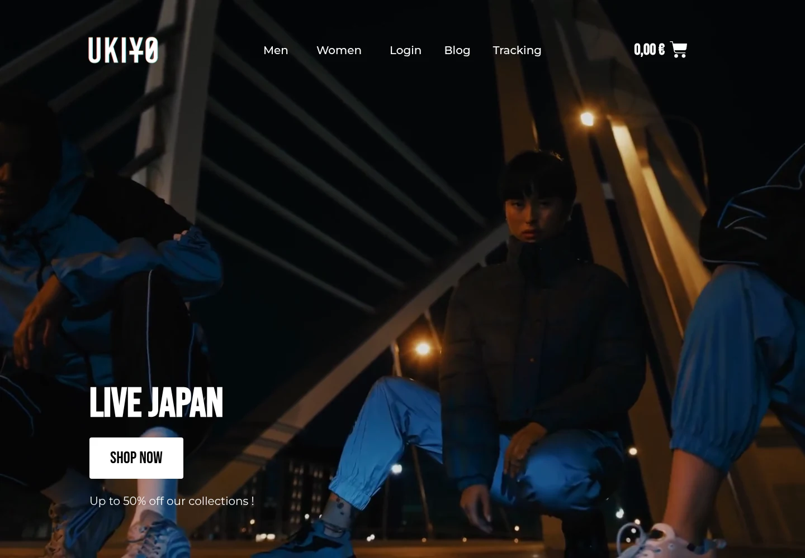
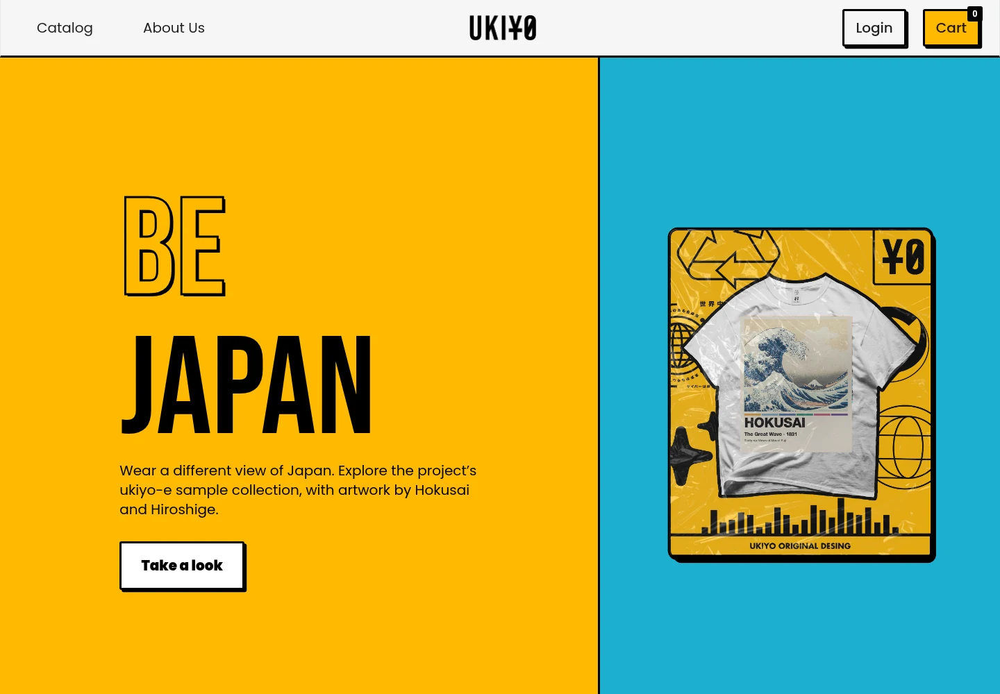
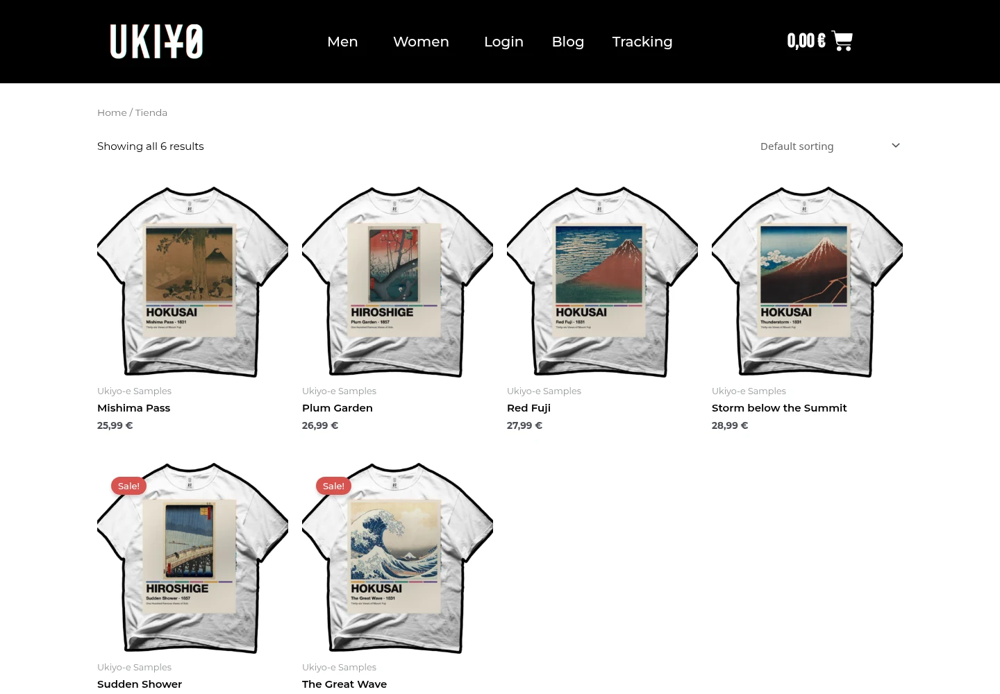
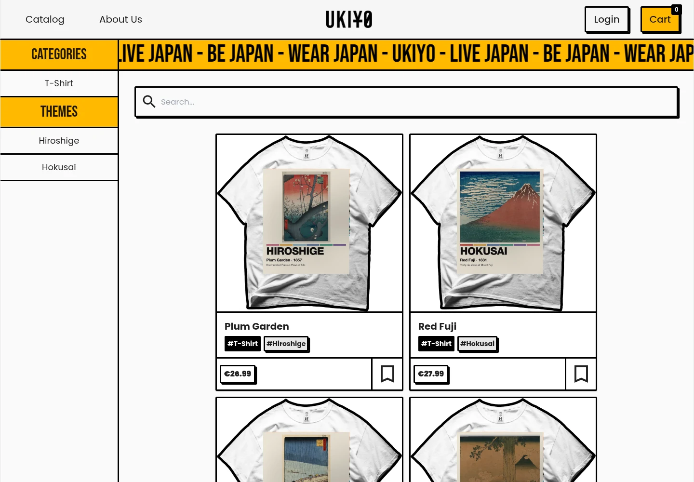
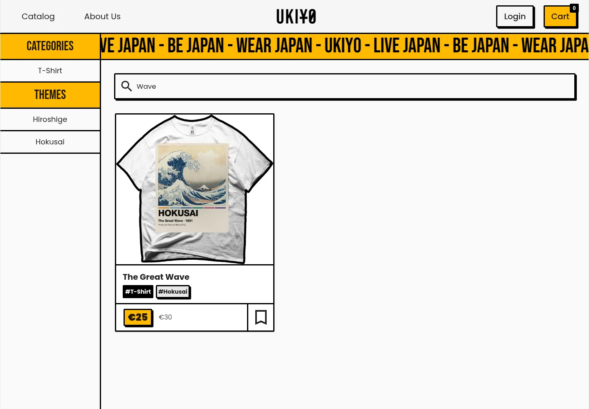
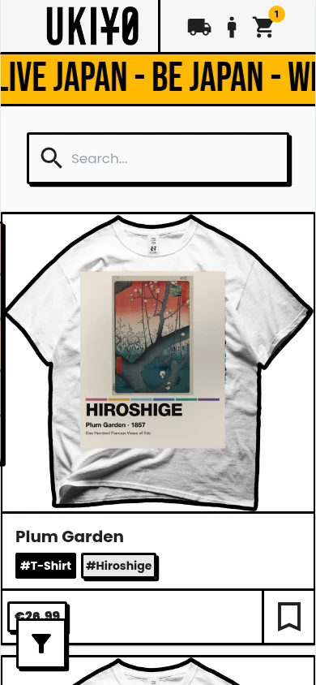
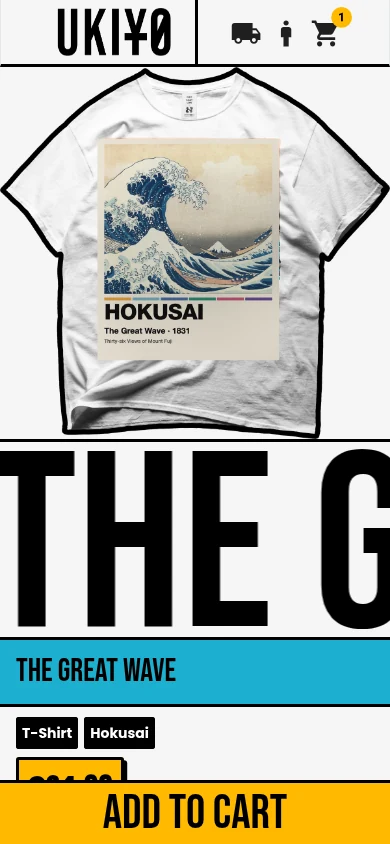

Identity without ambiguity
Keep the Japanese streetwear character, while giving navigation, price and purchase actions a consistent hierarchy.
A bold identity.
A considered shopping journey.
Ukiyo’s evolution from a configured WooCommerce shop to a custom Angular experience — running with the six t-shirt samples already made for the project.
Explore the experience

Two storefronts, one sample catalogue. Shopify is outside this case study. See the scope ↗
The original store had a clear visual world. The next challenge was giving shoppers more control inside it.
WordPress brought together product discovery, variations and a familiar WooCommerce purchase flow. The Angular final-degree project explored what could be owned directly: catalogue search, category and theme filters, saved products, the product view and the cart.
The original degree report describes the move beyond a paginated catalogue and records wireframes, desktop layouts and mobile adaptations. Those are the foundations of this retrospective — not a newly invented research process.
Keep the Japanese streetwear character, while giving navigation, price and purchase actions a consistent hierarchy.
Let shoppers narrow the catalogue by what a garment is and the visual world it belongs to.
Bring images, price and variants together, then offer a reviewable cart before payment.
Six designs. One consistent catalogue across both applications.
Existing project t-shirt samples, not newly invented artwork. The catalogue, variants and EUR prices are demonstration data. Samples and version provenance ↗
Each platform has its own story.
No invented continuity. No substitute UI.

Brand-led merchandising on Astra and Elementor. Product configuration and cart behaviour supplied by WooCommerce.

A custom academic frontend with a more explicit visual system, live search, filters, saved products and a Firebase-backed cart.
No interface.
No claim.
This case study covers the WordPress and Angular storefronts. Shopify is not implemented or captured here.
Captures from both applications running locally.
Select a step. Open any screen to inspect it.

The Angular catalogue puts search beside a persistent filter rail. Typing “Wave” isolates The Great Wave from the six-sample collection. The behaviour is exercised in the actual application, not simulated in this presentation.
Both applications use the same existing project samples. Product and cart comparisons show The Great Wave, size M, colour White. Products, variants and EUR prices are explicit demo data, not historical transactions. No payment is submitted.
One continuous browser recording.
Actual UI and local persistence. No simulated controls.
Silent walkthrough: type “Wave” → open The Great Wave sample → choose size M and colour White → Add to Cart → open the mini-cart → View Cart. Recorded on the Angular frontend with the project’s sample collection. No checkout is submitted.
The Angular filter rail becomes an on-demand overlay. The product action stays at the bottom of the mobile view.
These are captures at a real 390px viewport, not desktop screens pasted into phone mockups.
Keep the next action available.
Then check what it obscures. A sticky purchase action still needs keyboard, zoom and content-overlap testing.


The valuable part of looking back is knowing what to challenge next.
The original report records wireframes and interface iterations. It does not give this retrospective an audited usability study or a measured conversion uplift. These are the next design questions, not results dressed as metrics.
The Angular cart summary prioritises title, quantity and price. Size and colour are not prominent in that summary. Next: make the chosen variant explicit, then test whether shoppers can catch a wrong selection.
The original countdown is calculated toward the next Monday, not a product-specific offer expiry. Next: tie the UI to a genuine promotion end date, or remove the urgency.
Oversized moving titles bring character but compete with useful information. Next: reduce decorative motion, check wrapping, and test one-handed variant selection on narrow screens.
Next: audit focus, field labels, image alternatives, zoom and reduced motion in the original application. No WCAG compliance claim is made here.
Moving from a theme to a custom frontend is valuable when it changes what a shopper can do — not merely what the stack is called.
Running locally with the sample catalogue.
Not a claim of current production operation.
WordPress: the WooCommerce storefront with the project sample catalogue.
Angular: the custom frontend with a local Firebase emulator, the sample catalogue and sample shirts in its landing animation.
Original user accounts, comments and customer-order tables were excluded or removed from the local storefront. Live payment, mail and marketing integrations are disabled. The WordPress container has no outbound network.
Only interface captures and documentation belong in this repository — not the backup, database, credentials or raw product-media library.
Production payments, transactional email and the original hosted dataset. No sales, traffic, conversion or customer-count claims are made.
The sample shirts already existed in the project and use public-domain ukiyo-e artwork. Platform marks and any original storefront photography retain their respective ownership. This is a sample edition, not a production catalogue.